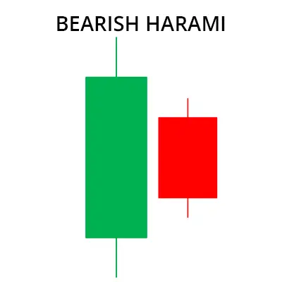

Das Bearish Harami-Muster ist ein Handelsmuster, das das Fehlen eines Aufwärtstrends anzeigt und
einen Abwärtstrend im Markt signalisiert. Dieses Muster wird durch zwei Kerzenständer gebildet.
Der erste Kerzenständer zeigt nach oben und der zweite Kerzenständer zeigt nach unten,
der den Körper des ersten Kerzenständers vollständig umschließt.